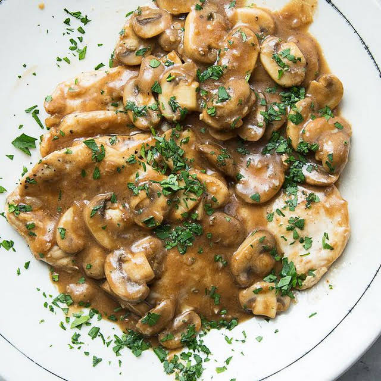

Chicken Marsala

Chicken marsala is an easy weeknight recipe to prepare. Pounding the chicken cutlets before cooking renders them thin and terrifically tender. Deglazing the pan with Marsala and stock after cooking the chicken creates a quick, rich sauce.
Ingredients
- 1.25lb chicken thighs, pounded until 1/4" thick
- kosher salt & black pepper
- 1/3 cup flour
- 5 tbsp olive oil
- 5 tbsp unsalted butter
- 8 oz. white button mushrooms
- 2 tbsp. minched shallots
- 1 clove garlic
- 1/3 cup dry Marsala wine
- 1/3 cup chicken stock (be a badass and make your own)
- 1 tbsp. finely chopped parsley
Steps
- Season chicken with salt and pepper and dredge in 1⁄3 cup flour. Heat 2 tbsp. oil and 1 tbsp. butter in a 12″ skillet over medium-high heat. Working in batches, add chicken, and cook, turning once, until golden brown, about 3 minutes. Transfer to a plate, and set aside. Add 2 tbsp. oil and 1 tbsp. butter, and then add mushrooms; cook until golden brown, about 8 minutes. Transfer to plate with chicken, and set aside.
- Heat remaining oil in skillet, and then add shallots and garlic; cook, stirring, until soft, about 1 minute. Stir in remaining 1 tbsp. flour; cook for 2 minutes. Add Marsala and stock; cook, stirring and scraping bottom of pan until slightly thick, about 2 minutes. Return chicken and mushrooms to skillet, and cook until heated through, about 2 minutes. Remove from heat; stir in remaining butter. Season with salt and pepper; garnish with parsley, if you like.
Home Page